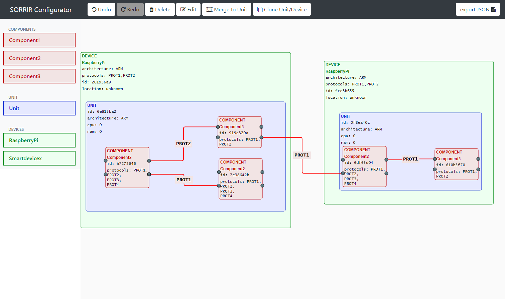
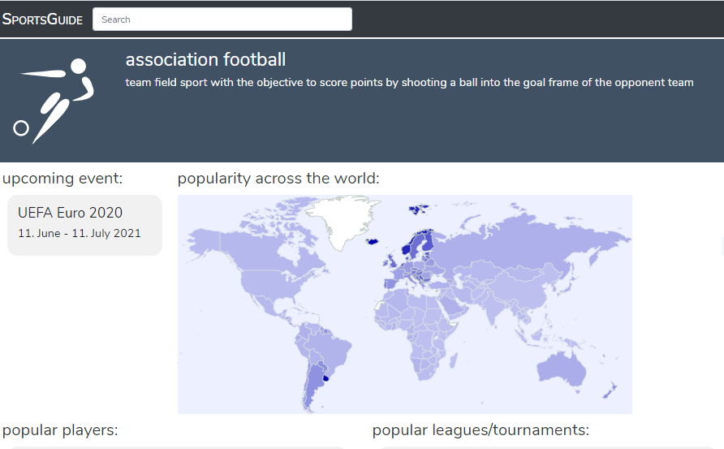
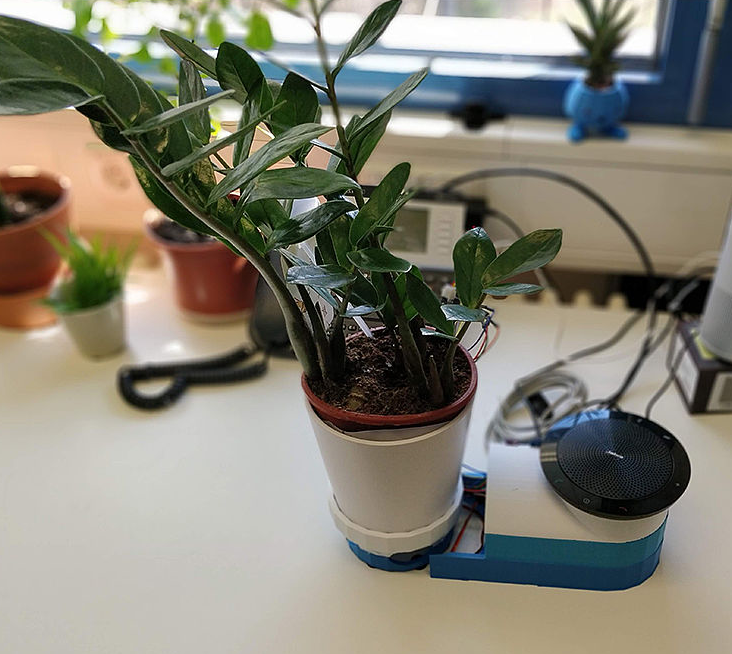
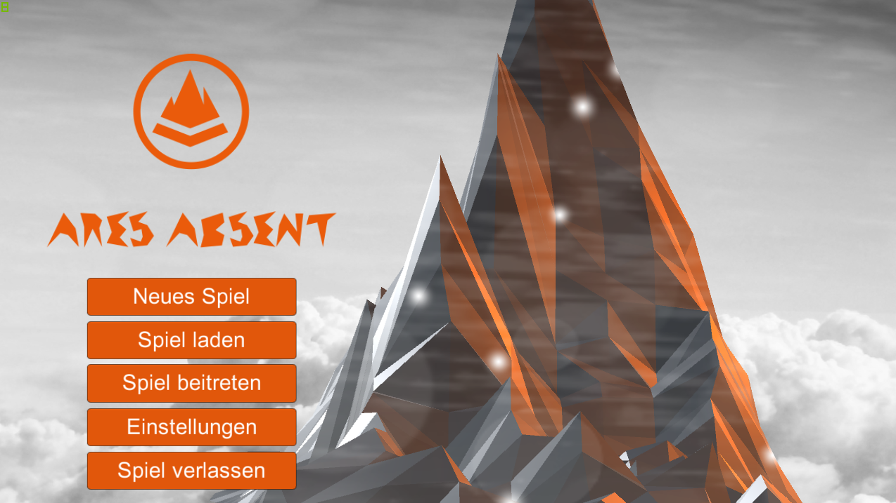
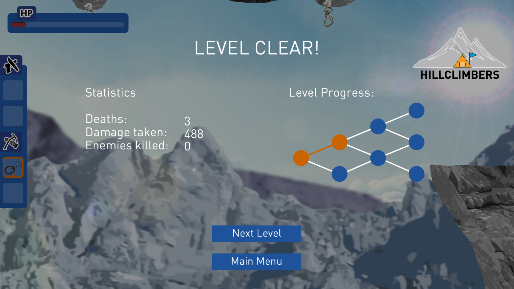

Profil
Details
- Name:
- David Fraas
- Alter:
- Jahre
- Wohnort:
- 95197 Schauenstein
- E-Mail:
- davidfraas1@gmail.com
- Xing:
- David Fraas
Interessen
Ursprünglich Softwareentwickler mit Schwerpunkt Webentwicklung, heute auf der Suche nach neuen Herausforderungen im Projektmanagement und der Entwicklung von Softwarearchitekturen. Ich interessiere mich für die Digitalisierung und Automatisierung von Prozessen, sowie die Entwicklung von verteilten Systemen. In meiner Freizeit repariere ich elektronische Geräte oder bastle an Microcontrollern. Ich lege hohen Wert auf die Qualität von Software und lerne ständig neue Technologien und Frameworks.
Lebenslauf
Studium
Universität Ulm
April 2018 bis Dezember 2020
Master of Science in Medieninformatik
Im Master Studium habe ich meine Kenntnisse im Web-Development und verteilten Systemen erweitert, sowie meine Erfahrungen im Projektmanagement, welche ich in meiner Zeit als Software-Entwickler erlangt habe, erweitert. Weitere wichtige Schwerpunkte waren u.a. Prozessoptimierung, IT-Sicherheit und Medienrecht.
Hochschule Hof
September 2013 bis Mai 2017
Bachelor of Science in Medieninformatik
Im Bachelor Studium habe ich mich nach den Grundlagensemestern für Web-Technologien spezialisiert. Dazu gehörten u.a. der Entwurf und die Implementierung von Web-Services und Webanwendungen. Weitere Themen im Studium waren u.a. Design, Marketing, Kryptologie und Game-Design.
Hochfranken Gymnasium Naila
Juni 2013
Abitur
Berufserfahrung
Appsfactory GmbH
März 2021 bis Heute
Product Owner
Tätigkeiten:
- technische Planung von Softwarearchitekturen
- Anwendung von agilen Methoden zur Produktspezifikation
- Planung und Durchführung von Scrum-Events
- Organisation und Durchführung von Kunden-Meetings
- Angebotserstellung
- Planung/Überwachung von Projekt-Budget und Ressourcen
novere GmbH
April 2018 bis März 2019
Full-Stack Entwickler (Werksstudent)
Während des Masterstudiums war ich nebenbei als Werksstudent für die Entwicklung von ASP.NET Webanwendungungen zuständig. Dazu zählte die Programmierung im Frontend mit HTML und CSS (Sass), sowie im Backend mit C#.
ServicePlus GmbH
April 2017 bis März 2018
Software-Entwickler
Tätigkeiten:
- Eigenständige Entwicklung und Konzeption von Kundenlösungen und Produkten (ASP.NET)
- Aktiver Aufbau einer agilen Projektumgebung
- Konzeptionelle Beweisführung im Bereich der Neuproduktentwicklung und Technologiebewertung
- Koordination des Wissensaustausches innerhalb des Entwickler Teams
novere GmbH
September 2016 bis März 2017
Software-Entwickler (Praktikum)
Im Praktikum war ich für die Implementierung von Webanwendungen zuständig. Zu meinen Tätigkeiten zählten die Programmierung von ASP.NET Webanwendungen im Frontend mit HTML und CSS (Sass), sowie im Backend mit C#. Weitere Tätigkeiten waren der Entwurf von Datenbankmodellen und das Interface-Design von Webanwendungen.
Skills
Programmiersprachen
JavaScript
HTML
CSS
Java
C#
PHP
Python
SQL
Frameworks/Technologien
Bootstrap
jQuery
ASP.NET
SASS
LESS
Angular
Node.js
MySQL
MSSQL
REST
CouchDB
Laravel
Eclipse Jersey
Docker
PWA
Arduino
Raspberry Pi
Unity3D
Projektmanagement
UML
GIT
Scrum
Jira
Confluence
BPMN
Sprachen
Deutsch (Muttersprache)
Englisch
Französisch
Russisch
Projekte
Suche
2020
Masterarbeit
Entwicklung eines Ansatzes zur automatischen Erstellung und Bereitstellung konfigurierbarer Progressive Web Apps
Die Allgegenwart von Smartphones ermöglicht neue Methoden zur Datenerfassung für die Untersuchung von chronischen Krankheiten. Eine Möglichkeit ist die Verwendung von Ecological Momentary Assessments (EMA), bei denen eine Person eine Befragung in einer natürlichen Umgebung und chronologisch nahe an dem Ereignis über dass sie berichten soll, durchführt. Dies verringert die Verzerrung der Forschungsdaten im Vergleich zu einer retrospektiven Bewertung. In Kombination mit Mobile Crowdsensing, welches die Sensoren des Smartphones zum Sammeln zusätzlicher Kontextdaten verwendet, können wichtige Daten zur Untersuchung von chronischen Krankheiten gesammelt werden. Es gibt bisher jedoch keine generische Softwarelösung zum Erstellen und Bereitstellen von EMA-Anwendungen in Kombination mit Mobile Crowdsensing. In der Masterarbeit wurde ein Framework zur Automatisierung des Erstellungs- und Bereitstellungsprozesses konfigurierbarer progressive Web-Applications (PWAs) implementiert. Die Arbeit untersucht verwandte Projekte, um die funktionalen und nicht funktionalen Anforderungen für die Implementierung zu definieren. Im nächsten Schritt wurde ein Konzept mit technologischen und architektonischen Aspekten und einem Interface-Design für die Webanwendung entwickelt. Die daraus resultierende Implementierung des Frameworks umfasst die Prozesse zum Konfigurieren, Erstellen und Ausführen der PWA sowie die Funktionen der PWA inklusive Benachrichtigungsplanung, Sensornutzung und Offline-Zugriff. Ein Vergleich zwischen den Anforderungen und der fertigen Implementierung zeigt, dass das Framework das Ziel erreicht hat, einen Ansatz für die Erstellung und Bereitstellung konfigurierbarer PWAs zu entwickeln.
Privat
Homepage davidfraas.de
Gestaltung und Umsetzung meiner persönlichen Homepage.
Studium
SORRIR Konfigurator
Der SORRIR-Konfigurator ist ein Konfigurationstool welches im Zusammenhang mit dem SORRIR-Projekt entwickelt wurde. Das SORRIR-Projekt ist eine selbst-organisierende, resiliente Planungs- und Ausführungsumgebung für IoT Services und unterstützt den Entwurf von einbruchssicheren, zuverlässigen und verfügbaren IoT-Diensten. Das Ziel des SORRIR-Konfigurators besteht darin, eine grafische Oberfläche bereitzustellen, über die ein Benutzer seine eigene IoT-Plattform mittels flow-based programming entwerfen kann.
Studium
SportsGuide
SportsGuide wurde im Rahmen des Projektmoduls "Semantic Web" als Webanwendung zur Darstellung von Ontologien entwickelt. Als Datenquelle wurde die Community-betriebene Ontologie WikiData verwendet. Der Schwerpunkt liegt bei Sportarten und deren weiltweiten Popularität. Es werden u.a. bekannte Spieler, Ligen und Turniere weltweit, oder in einem bestimmten Land dargestellt.
2019
Studium
BOTani
BOTani stellt eine symbiotische Verbindung zwischen aktuellen DVA (Digital Voice Assistants) wie Alexa oder Google Assistant und einer gewöhnlichen Zimmerpflanze dar. Der verwendete Sprachassistent, Mycroft, erlaubt durch Open Source Lizenz eine Anpassung, sodass die Pflanze über den Sprachassistenten mit dem Nutzer kommunizieren kann. Dabei können Bedürfnisse geäußert werden im Bezug auf Wasser, Temperatur oder Licht, sowie Informationen über die Pflanze selbst, wann zuletzt gegossen wurde, o.Ä. über Sprachausgabe zur Verfügung gestellt werden. Die Pflanze reagiert hierbei auf ein klassisches Wakeword oder auf Berührung mit einer kleinen Bewegung. Der aktuelle Zustand wird zusätzlich durch indirekte LEDs betont. Das Setup besteht aus einer Pflanze, Barometer, Thermometer, Lichtsensor, Feuchtigkeitssensor, Berührungssensor, einem kleinen Servomotor und einem Arduino sowie einem Raspberry 3b+ auf dem das System läuft.
2018
Privat
Infinity Mirror DMX Audio Spectrum Visualizer
Der Infinity Mirror DMX Audio Spectrum Visualizer (IMDASV) ist ein Infinty Mirror mit einzeln ansteuerbaren WS2812 LEDs, welcher mit Hilfe eines Aurduino Uno + DMX-Shield ein eingehendes DMX Signal in eine Visualisierung der Tieftöne umwandelt. Das eingehende DMX Signal wird durch einen Windows PC mit der Lichtsteuerungssoftware DMXControl 2 erzeugt, welches das Audio Spektrum des aktuell gespielen Liedes in Echtzeit ausliest.
2017
Bachelorarbeit
Konzeption eines Frameworks zur Vereinheitlichung der Webentwicklung in einem Unternehmen
Ziel der Bachelorarbeit war es, ein Frontend-Framework für ein Unternehmen zur Vereinfachung der Entwicklung von Webanwendungen zu erstellen. Das Framework sollte den Entwicklern den Prozess der Implementierung von Webanwendungen vereinfachen indem es einheitliche Software-Lösungen für wiederkehrende Aufgaben zur Verfügung stellt. Außerdem soll ein einheitliches Erscheinungsbild als Wiedererkennungswert gegeben sein.
Privat
BluetoothVolumeChanger
Der BluetoothVolumeChanger ist ein Türsensor, der via Bluetooth mit einem Windows-PC verbunden ist und automatisch die Lautstärke verringert, sobald die Tür geöffnet wurde. Er kommt bei privaten Feiern zum Einsatz um Nachbarn/umliegende Häuse vor unnötiger Lärmbelästigung zu schützen.
2016
Studium
Ares Absent
Das 3D Multiplayer Rätselspiel Ares Absent wurde für das Modul 3D Game-Design entwickelt. Im vergleich zum 2D jump'n'run Spiel "Hillclimbers" lag der Fokus zusätzlich auf der 3D Modellierung mit Blender, und der Verbindung mit einem weiteren Client übers Internet für den Multiplayer-Modus.
Studium
Hillclimbers
Hillclimbers ist ein 2D jump'n'run Spiel, welches im Rahmen des Moduls Game-Design entwickelt wurde. Zur Entwicklung des Spiels zählten die Konzeption, die Gestaltung von Grafiken und Effekten, sowie die Programmierung mit Unity3D.
Privat
Homepage bluepowerfranken.de
 Gestaltung und Umsetzung der Homepage des Fanclubs Blue Power Franken aus Geroldsgrün.
Gestaltung und Umsetzung der Homepage des Fanclubs Blue Power Franken aus Geroldsgrün.
Privat
Homepage bischoff-holzbau.de
 Gestaltung und Umsetzung der Homepage für den Zimmerei Betrieb Bischoff Holzbau.
Gestaltung und Umsetzung der Homepage für den Zimmerei Betrieb Bischoff Holzbau.